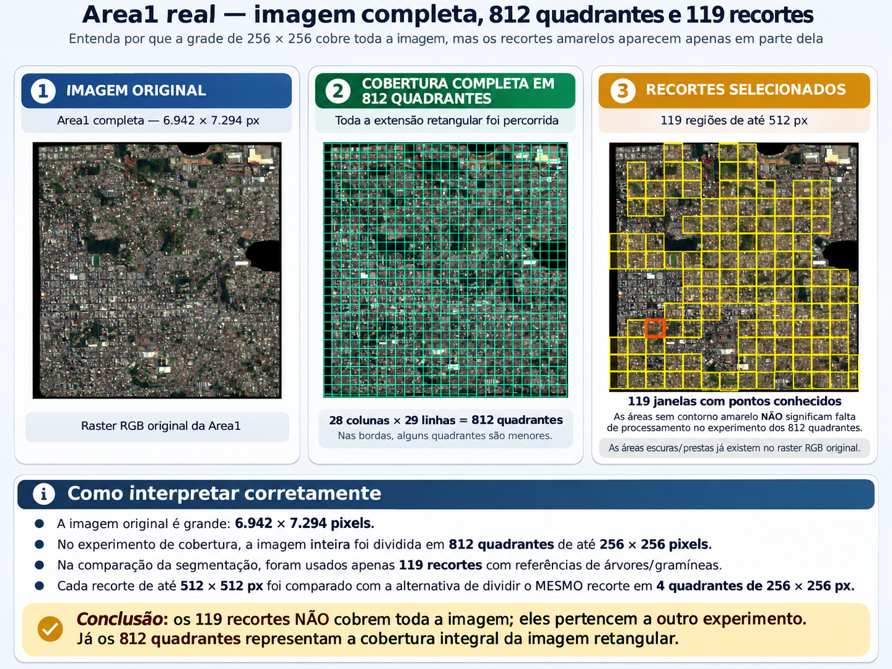
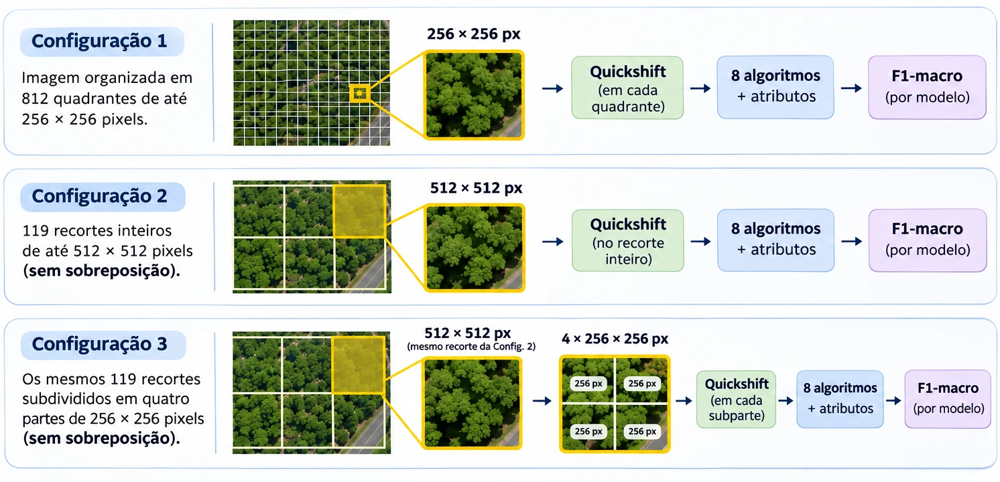
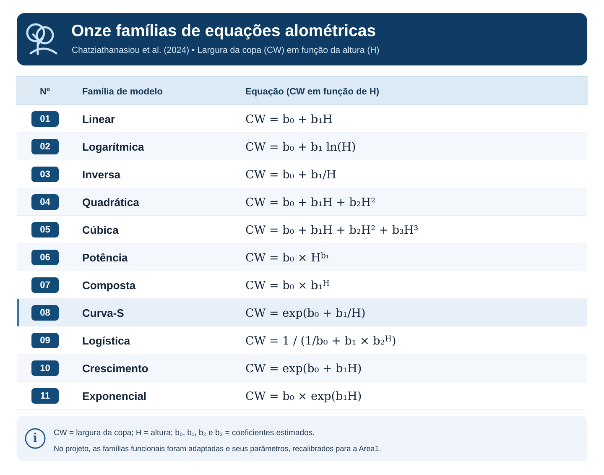
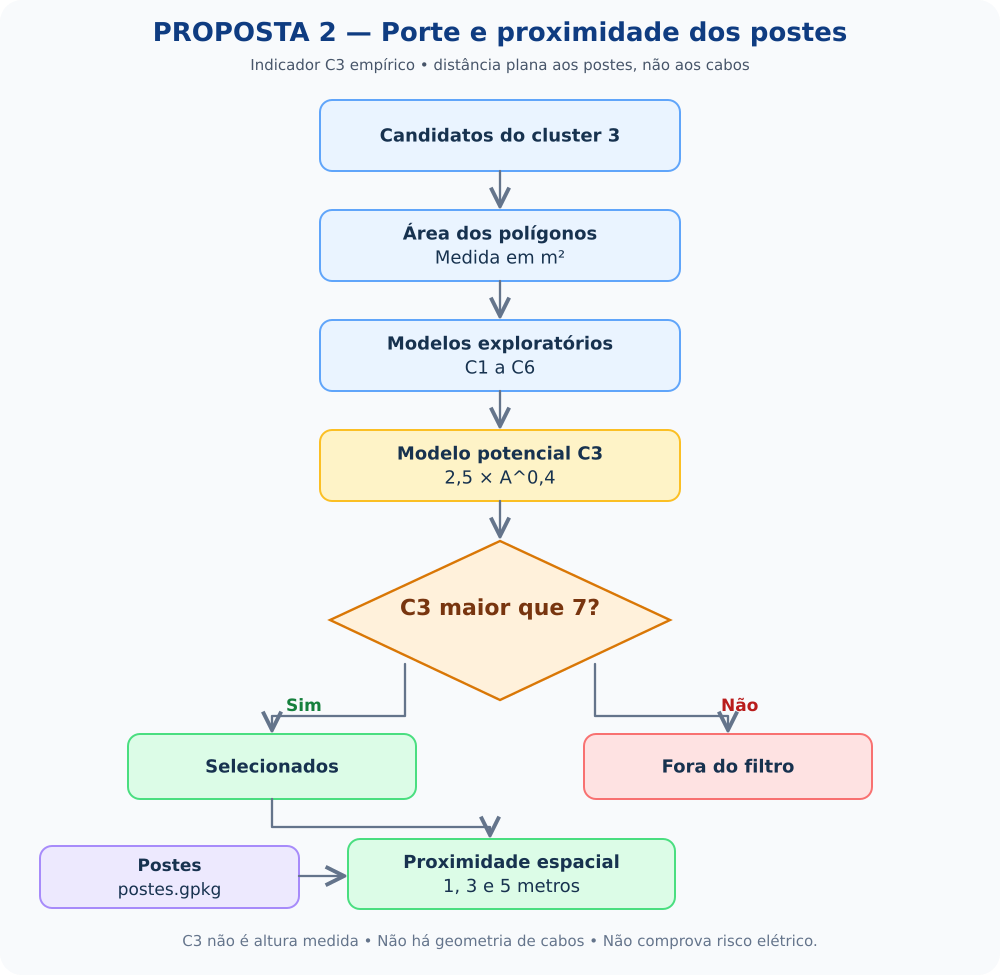

PROPOSTA 01 ↗
Identificação da vegetação
Como distinguir árvores e gramíneas a partir de segmentos de imagens de satélite?
- Quickshift, atributos espectrais e visuais
- Oito classificadores supervisionados
- Avaliação por F1-macro e validação espacial
Classificação de árvores e gramíneas com imagens de alta resolução, experimentos de segmentação e avaliação exploratória de porte e proximidade com postes.

Uma investigação com duas frentes complementares, usando imagens RGB e RGB + NIR e referências georreferenciadas já existentes.
Combinação de Características de Brilho, Bordas e NDVI para Detecção de Árvores Urbanas e Avaliação de Proximidade com Linhas de Energia
Como distinguir árvores e gramíneas a partir de segmentos de imagens de satélite?
Quais segmentos candidatos apresentam índices exploratórios de porte e estão espacialmente próximos a postes?
O limite de memória motivou a adoção de recortes menores, mantendo os dados originais e documentando quais comparações são controladas.
Quickshift global → K-Means (6 grupos, cluster 3) → Random Forest (500 árvores).
Grade de até 256 × 256 px para cobrir a imagem com processamento progressivo.
119 janelas de até 512 × 512 px contendo referências, segmentadas individualmente.
As mesmas 119 janelas, agora divididas em partes de até 256 × 256 px.
O diagrama resume a diferença entre cobrir a imagem inteira e selecionar regiões com pontos conhecidos. Apenas as configurações 02 e 03 são diretamente comparáveis entre si.
Ver explicação metodológica completa ↗
Como evitamos avaliações otimistas? Os novos testes usam cinco divisões com blocos espaciais de 250 m e 500 m e exclusão de 25 m entre treino e teste. O objetivo é reduzir o efeito da proximidade geográfica — sem afirmar independência espacial absoluta.
Explore o F1-macro dos oito classificadores. As duas formas de segmentação abaixo utilizaram os mesmos 119 recortes, as mesmas referências e as mesmas partições de teste.
O desempenho varia conforme classificador, tamanho do recorte e escala dos blocos espaciais.
Média de cinco divisões espaciais; quanto maior, melhor.
| Classificador | F1-macro |
|---|
O Quickshift global demandou muita memória no método histórico. Na comparação controlada dos 119 recortes, a subdivisão trouxe uma economia de RAM pequena, mas mensurável.
Os 5,42 GiB associados ao método histórico não são uma medição pareada com os 119 recortes.Nos testes com a base derivada de quadrantes, a combinação de NDVI, brilho HSV e bordas Canny elevou o F1-macro de todos os classificadores que usam atributos, em comparação com a dupla HSV + Canny.
Informação espectral derivada das bandas vermelha e infravermelha próxima, associada à vegetação.
Intensidade média do canal de brilho para caracterizar cada segmento da imagem.
Informação sobre transições e contornos presentes nos segmentos.
Mesmos segmentos e divisões para cada comparação; F1-macro médio em cinco divisões.
Preparando comparação dos atributos...
Leitura do resultado: combinar atributos espectrais, brilho e bordas mostrou benefícios nas condições avaliadas; a magnitude do ganho depende do classificador e do protocolo espacial.
Investigamos índices exploratórios C1–C6 e onze famílias de curvas adaptadas, tomando as previsões de altura da Meta/WRI CHMv2 como referência externa — não como verdade medida em campo.
As famílias curva-S, cúbica e inversa estiveram entre as melhores em diferentes avaliações. Entretanto, nenhuma superou o controle constante, e a área de um superpixel, isoladamente, não recuperou de modo confiável a variação individual das alturas estimadas pela Meta/WRI.
Altura estimada no pixel do ponto
Máximo estimado no raio de 5 m
41,6% dos 257 pontos no pixel
Comparadas com validação espacial
MAE em metros, calculado em comparação com as estimativas da Meta/WRI. Quanto menor, melhor.
Carregando as métricas registradas no repositório...
O método original implementou seis configurações de coeficientes, cada uma com versão potencial e linear. As onze famílias do artigo de 2024 constituem outra bateria de testes, com curvas adaptadas e recalibradas à Area1.
Entender as equações e as limitações ↗
Resultados carregados diretamente do CSV completo de 74 colunas deste repositório.
| Árvore | Meta pixel | Meta 5 m | Modelo · pixel | Modelo · 5 m |
|---|---|---|---|---|
| Carregando os pontos do CSV... | ||||
As previsões OOF foram obtidas fora do treinamento. As séries C1–C6 são índices exploratórios; seus valores não são alturas medidas em metros.
A análise de proximidade entre segmentos candidatos e postes é bidimensional e exploratória. Sem altura real das árvores, geometria dos cabos e validação adicional, não é possível concluir a existência de risco elétrico.
Entender os limites da análise ↗
O site é uma apresentação visual do README. Os arquivos originais, métodos, métricas e limitações permanecem documentados no repositório para consulta e reprodução dos testes.
Contexto, área de estudo, metodologia, experimentos, comparações e conclusões.
Ler documentação ↗ NOTEBOOKSegmentação, classificação e validação espacial.
Abrir notebook ↗ NOTEBOOKÍndices C1–C6, Meta/WRI e curvas adaptadas.
Abrir notebook ↗ BASE DE DADOSResultados completos da comparação alométrica.
Baixar CSV ↓ RELATÓRIOMetodologia pareada de segmentação e F1-macro.
Ver relatório ↗ RELATÓRIOValidação das equações e suas limitações científicas.
Ver relatório ↗Pesquisa em desenvolvimento, restrita à Area1. Acurácia histórica e F1-macro das novas avaliações usam protocolos diferentes; estimativas Meta/WRI não substituem altura medida em campo; a análise de postes não demonstra risco elétrico. Este site não é institucional nem afiliado à Fundação Getulio Vargas.